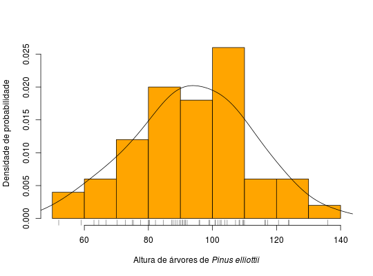
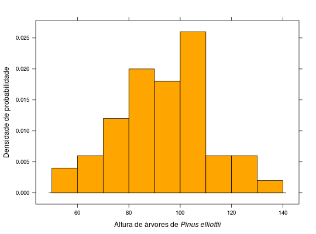
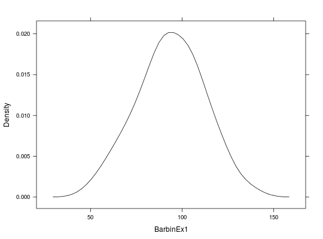
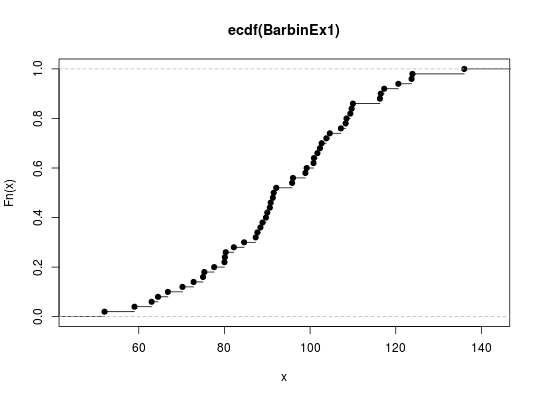
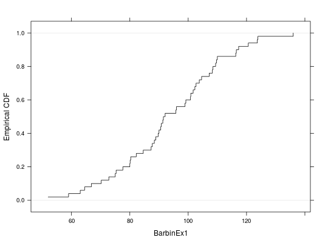
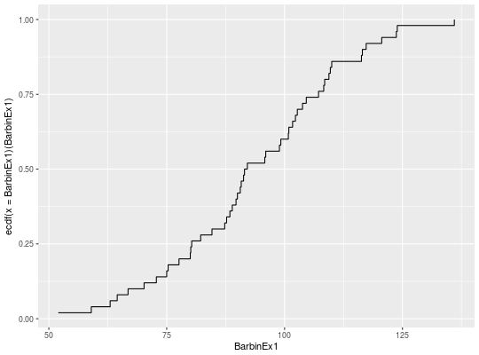

Os dados referem-se à altura (m) de Pinus elliottii, var. elliottii, com 10 anos de idade plantadas no espaçamento 2\(\times\)2,5 metros.
Um vetor com 50 elementos de valor numérico.
BARBIN (2013), Exercício 1, pág. 199.
library(latticeExtra) library(ggplot2)#> #>#> #> #>data(BarbinEx1)#> Warning: data set ‘BarbinEx1’ not foundstr(BarbinEx1)#> num [1:50] 84.6 72.8 136 103.8 102.7 ...# Histograma + densidade com graphics. ht <- hist(BarbinEx1, prob = TRUE, main = NULL, col = "orange", ylab = "Densidade de probabilidade", xlab = expression("Altura de árvores de" ~italic("Pinus elliottii")))lines(density(BarbinEx1))rug(BarbinEx1)# Histograma + densidade com lattice. histogram(BarbinEx1, breaks = ht$breaks, col = "orange", type = "density", ylab = "Densidade de probabilidade", xlab = expression("Altura de árvores de" ~italic("Pinus elliottii")))latticeExtra::as.layer(densityplot(BarbinEx1, plot.points = FALSE, col = 1))#> [[1]] #> expression({ #> packet.number <- min(packet.number(), prod(dim(x))) #> do.call(x$panel, trellis.panelArgs(x, packet.number)) #> }) #> attr(,"data") #> attr(,"data")$x#> #> attr(,"under") #> [1] FALSE #> attr(,"superpose") #> [1] FALSE #> #> attr(,"class") #> [1] "layer" "trellis"latticeExtra::layer(panel.rug(x = x, col = 1))#> [[1]] #> expression(panel.rug(x = x, col = 1)) #> attr(,"under") #> [1] FALSE #> attr(,"superpose") #> [1] FALSE #> #> attr(,"class") #> [1] "layer" "trellis"# Histograma + densidade com ggplot2. ggplot()geom_histogram(mapping = aes(x = BarbinEx1, y = ..density..), breaks = ht$breaks, fill = "orange", col = 1)#> mapping: x = BarbinEx1, y = ..density.. #> geom_bar: na.rm = FALSE #> stat_bin: binwidth = NULL, bins = NULL, na.rm = FALSE, pad = FALSE, breaks = c(50, 60, 70, 80, 90, 100, 110, 120, 130, 140) #> position_stackgeom_rug(mapping = aes(x = BarbinEx1), sides = "b")#> mapping: x = BarbinEx1 #> geom_rug: sides = b, na.rm = FALSE #> stat_identity: na.rm = FALSE #> position_identitygeom_density(mapping = aes(x = BarbinEx1, y = ..density..))#> mapping: x = BarbinEx1, y = ..density.. #> geom_density: na.rm = FALSE #> stat_density: na.rm = FALSE #> position_identitylabs(y = "Densidade de probabilidade", x = expression("Altura de árvores de" ~italic("Pinus elliottii")))#> $y #> [1] "Densidade de probabilidade" #> #> $x #> expression("Altura de árvores de" ~ italic("Pinus elliottii")) #> #> attr(,"class") #> [1] "labels"# Acumulada empírica. plot(ecdf(BarbinEx1))ecdfplot(BarbinEx1, col = 1)qplot(BarbinEx1, ecdf(x = BarbinEx1)(BarbinEx1), geom = "step")